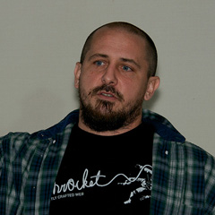

Taming the Web with Cowboy & Coyote
Johnny WinnHost of the Elixir Fountain
Taming the Web with Cowboy & Coyote
What if I told you we could simplify web development with OTP over MVC. At first glance you might think anything with “simplifying with OTP” sounds complicated. I mean have you built an OTP application? We’re talking supervision, transient processes, crashes, recoveries, that’s not even including distributing applications across multiple nodes. Can’t we just use a framework for that? Don’t worry we’ve all been there but it’s actually really simple and exceptionally fun to build pure OTP applications to run on the web. In this talk, we cover how coyote was built to manage distributed OTP applications servicing web requests via cowboy. We’ll see the code used to manage node connections, message relays, and of course all the goodness that is OTP. Some call it thinking outside the box but we could say that we're taming the Web with Cowboy & Coyote!
Talk objectives:
- Show how simply it is to build scalable distributed applications with pure OTP applications
Target audience:
- Elixir developers that are interested in learning more about OTP and/or alternative ways to think about web development.
Video
About Johnny
The renaissance man from Jacksonville, Johnny embarked on his computing curiosity during the eighties on a Commodore 64. However the road leading toward software craftsmanship has diverged down many paths. From musician to electrical engineer, chef to software developer, rugby player to local politician, the twist and turns have provided a wide range of experiences that have helped to shape him. GitHub:
nurugger07
Twitter:
@johnny_rugger